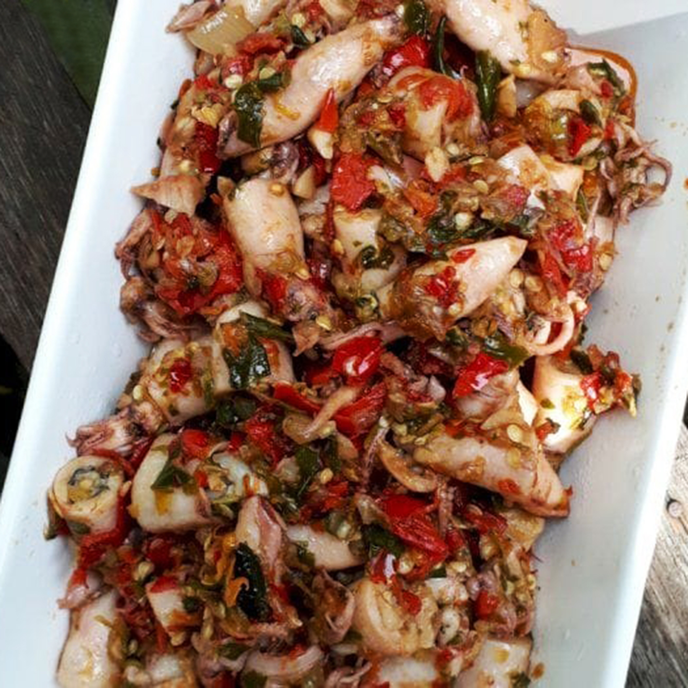

Sambal Cumi dengan sambal matah dan bumbu spesial
Bahan:
- 250 gram baby cumi asin
- 10 biji cabai setan
- 1 buah tomat
- 5 biji cabai merah besar
- 6 siung bawang merah
- 4 siung bawang putih
- 1 ruas lengkuas geprek
- 1 buah serai (selera)
- 2 lembar daun salam
- 3 lembar daun jeruk
- 1,5 sdm gula aren/gula pasir
- 1/2 sdm kaldu bubuk (tidak pakai garam karena cumi sudah asin)
Cara Membuat:
- Bersihkan cumi, buang tulangnya kemudian rendam air panas
- Kukus cabai setan, cabai merah, tomat selama 5 menit / sampai layu. Matikan kompor kemudian tunggu dingin kemudian blender yg sudah dikukus td dengan bawang merah, bawang putih
- Tumis bumbu dengan sedikit minyak, masukkan bumbu cemplung, masukkan gula, penyedap sambil diaduk, masukkan cumi, beri sedikit air, tes rasa dan biarkan air menyusut dan bumbu meresap